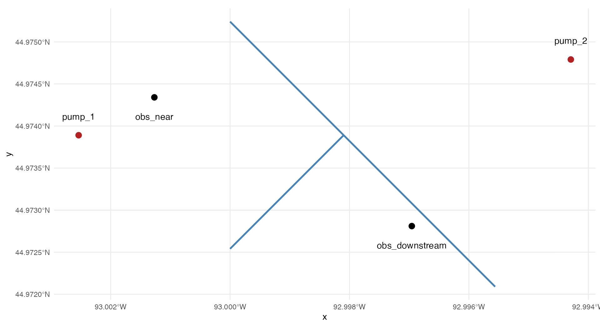
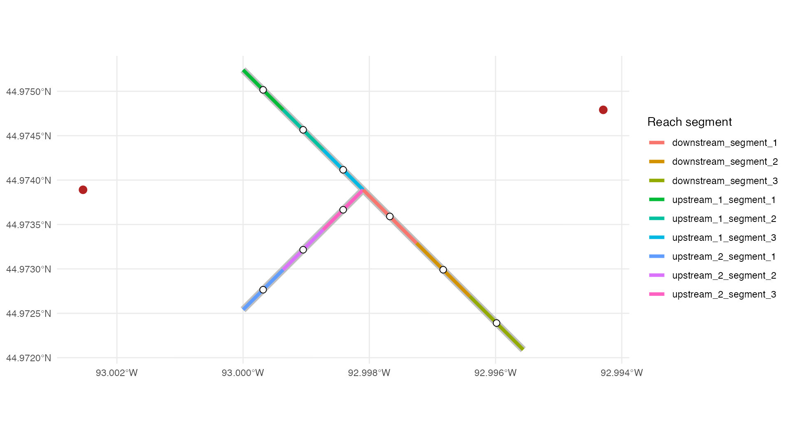
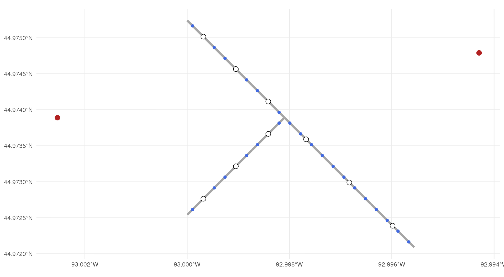
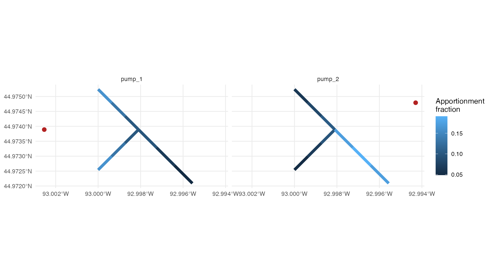
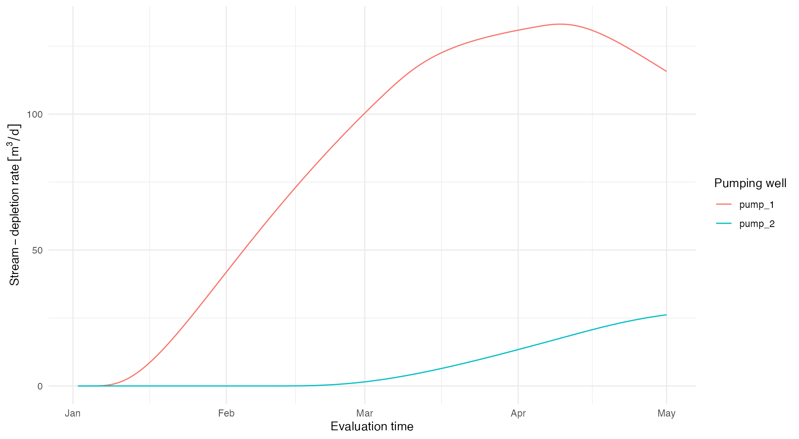
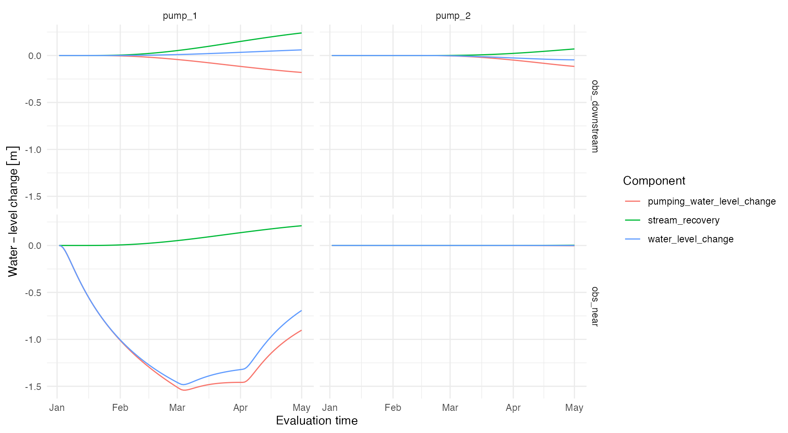

stream-depletion-apportionment-internals.Rmd
library(isw)
#> Loading required package: expint
#> Loading required package: units
#> udunits database from /Library/Frameworks/R.framework/Versions/4.6/Resources/library/units/share/udunits/udunits2.xml
library(units)
library(tibble)
library(dplyr)
#>
#> Attaching package: 'dplyr'
#> The following objects are masked from 'package:stats':
#>
#> filter, lag
#> The following objects are masked from 'package:base':
#>
#> intersect, setdiff, setequal, union
library(ggplot2)
library(sf)
#> Linking to GEOS 3.13.0, GDAL 3.8.5, PROJ 9.5.1; sf_use_s2() is TRUEThis vignette repeats the workflow in
vignette("stream-depletion-apportionment") in the same
order. After each top-level ADF function call, it opens that function to
show the intermediate objects, calculations, and modeling choices
involved.
Functions called with isw::: are implementation details.
They are useful for understanding and diagnosing a calculation, but they
may change without the compatibility guarantees associated with exported
functions. Application code should normally use the top-level functions
shown at the start of each section.
The walkthrough uses the same two pumping wells, three connected stream reaches, and two observation wells as the main vignette.
pumping_wells <- example_pumping_wells
stream_reaches <- example_stream_reaches
observation_wells <- example_observation_wells
ggplot() +
geom_sf(data = stream_reaches, color = "steelblue", linewidth = 1) +
geom_sf(data = pumping_wells, color = "firebrick", size = 3) +
geom_sf(data = observation_wells, color = "black", size = 3) +
geom_sf_text(data = pumping_wells, aes(label = pump_id), nudge_y = 25) +
geom_sf_text(
data = observation_wells,
aes(label = observation_id),
nudge_y = -25
) +
theme_minimal()
pumping_wells supplies one point and one unique
pump_id per physical well. It also supplies the hydraulic
conductivity K, aquifer thickness D, drainable
porosity V, and optional well_diam used by the
analytical responses. Here, well_diam is 0.3 m for both
wells.
pumping_wells
#> Simple feature collection with 2 features and 5 fields
#> Geometry type: POINT
#> Dimension: XY
#> Bounding box: xmin: 499800 ymin: 4980050 xmax: 500450 ymax: 4980150
#> Projected CRS: WGS 84 / UTM zone 15N
#> # A tibble: 2 × 6
#> pump_id K D V well_diam geometry
#> * <chr> [m/s] [m] <dbl> [m] <POINT [m]>
#> 1 pump_1 0.00001 50 0.1 0.3 (499800 4980050)
#> 2 pump_2 0.0000075 40 0.12 0.3 (500450 4980150)stream_reaches supplies the line geometry to which
depletion will be apportioned. The user supplies a unique
reach_id for every input feature. The package later creates
reach_segment_id values when it discretizes those features;
users should not add that reserved column themselves.
stream_reaches
#> Simple feature collection with 3 features and 1 field
#> Geometry type: LINESTRING
#> Dimension: XY
#> Bounding box: xmin: 5e+05 ymin: 4979850 xmax: 500350 ymax: 4980200
#> Projected CRS: WGS 84 / UTM zone 15N
#> reach_id geometry
#> 1 upstream_1 LINESTRING (5e+05 4980200, ...
#> 2 upstream_2 LINESTRING (5e+05 4979900, ...
#> 3 downstream LINESTRING (500150 4980050,...observation_wells is needed only for aquifer drawdown.
Each point has a unique observation_id. All spatial inputs
must have a defined CRS, but they do not need to begin in the same CRS
because the modeling functions transform copies to a common projected
analysis CRS.
The temporal inputs are identical to those in the main vignette. Schedule times indicate changes in pumping rate; evaluation times indicate when output is requested.
pumping_schedules <- tibble(
t = as.Date(c("2025-01-01", "2025-02-01", "2025-03-01", "2025-04-01")),
pump_1 = set_units(c(500, 500, 300, 0), "m^3/day"),
pump_2 = set_units(c(0, 250, 250, 0), "m^3/day")
)
evaluation_times <- seq.Date(
from = pumping_schedules$t[1] + 1,
by = "day",
length.out = 120
)
pumping_schedules
#> # A tibble: 4 × 3
#> t pump_1 pump_2
#> <date> [m^3/d] [m^3/d]
#> 1 2025-01-01 500 0
#> 2 2025-02-01 500 250
#> 3 2025-03-01 300 250
#> 4 2025-04-01 0 0The schedule must be in wide format. Its first column is
t, and every other column name must exactly match one
pump_id. Times must increase strictly, and pumping rates
must have flow units. A row’s rates remain in effect until the next row.
The rates in the final row continue indefinitely; the package does not
assume that pumping stops after the final schedule time. To represent a
shutdown, users must include a final row that sets the applicable
pumping rates to zero, as this example does on 2025-04-01.
Internally, Date values and unit-bearing relative times
are normalized to elapsed days. The original representation is restored
in the returned output. Evaluation times are independent of the schedule
and may be more or less frequent. Passing
evaluation_times = NULL to the modeling functions requests
output at pumping_schedules$t.
The first ADF modeling step assigns a static fraction of each pump’s eventual stream depletion to every modeled reach segment.
stream_apportionment <- get_stream_reach_apportionment(
pumping_wells,
stream_reaches,
reach_spacing = set_units(100, "m"),
sample_spacing = set_units(25, "m"),
method = "web_squared"
)
stream_apportionment[c(
"pump_id",
"reach_id",
"reach_segment_id",
"pump_to_reach_distance",
"apportionment_fraction"
)]
#> Simple feature collection with 18 features and 5 fields
#> Geometry type: LINESTRING
#> Dimension: XY
#> Bounding box: xmin: 5e+05 ymin: 4979850 xmax: 500350 ymax: 4980200
#> Projected CRS: WGS 84 / UTM zone 15N
#> First 10 features:
#> pump_id reach_id reach_segment_id pump_to_reach_distance
#> 1 pump_1 upstream_1 upstream_1_segment_1 250.0000 [m]
#> 2 pump_1 upstream_1 upstream_1_segment_2 269.2582 [m]
#> 3 pump_1 upstream_1 upstream_1_segment_3 304.1381 [m]
#> 4 pump_1 upstream_2 upstream_2_segment_1 250.0000 [m]
#> 5 pump_1 upstream_2 upstream_2_segment_2 269.2582 [m]
#> 6 pump_1 upstream_2 upstream_2_segment_3 304.1381 [m]
#> 7 pump_1 downstream downstream_segment_1 350.0000 [m]
#> 8 pump_1 downstream downstream_segment_2 421.9663 [m]
#> 9 pump_1 downstream downstream_segment_3 501.3870 [m]
#> 10 pump_2 upstream_1 upstream_1_segment_1 400.0000 [m]
#> apportionment_fraction geometry
#> 1 0.16085181 LINESTRING (5e+05 4980200, ...
#> 2 0.13165556 LINESTRING (500050 4980150,...
#> 3 0.10092931 LINESTRING (500100 4980100,...
#> 4 0.16085181 LINESTRING (5e+05 4979900, ...
#> 5 0.13165556 LINESTRING (500050 4979950,...
#> 6 0.10092931 LINESTRING (500100 4980000,...
#> 7 0.09694901 LINESTRING (500150 4980050,...
#> 8 0.06753111 LINESTRING (500216.7 497998...
#> 9 0.04864652 LINESTRING (500283.3 497991...
#> 10 0.06392835 LINESTRING (5e+05 4980200, ...get_stream_reach_apportionment()
The function validates the wells and reaches, selects a projected
analysis CRS, transforms copies of the inputs, drops Z and M
coordinates, and supplies a zero-meter diameter if
well_diam is absent. By default, a local UTM CRS is
selected from the combined spatial extent.
analysis_crs <- isw:::.select_analysis_crs(
pumping_wells,
stream_reaches
)
spatial_inputs <- isw:::.prepare_spatial_inputs(
pumping_wells,
stream_reaches,
analysis_crs = analysis_crs
)
spatial_inputs$analysis_crs$Name
#> [1] "WGS 84 / UTM zone 15N"
spatial_inputs$pumping_wells$well_diam
#> Units: [m]
#> [1] 0.3 0.3Use analysis_crs in the top-level call when a particular
projected CRS is required. This can be important when inputs span UTM
zones or must align with another analysis. A geographic
longitude-latitude CRS is not accepted because the model requires linear
distances.
The function divides every reach into approximately equal segments no
longer than reach_spacing. Each segment retains its parent
reach_id, receives a generated
reach_segment_id, and stores its actual
represented_length. model_point is the
along-line midpoint used later as the equivalent stream-injection
location.
This creates three distinct spatial units in the ADF workflow:
| Spatial object | Role in the analysis |
|---|---|
| Reach | A user-supplied source geometry identified by
reach_id. Reaches can be used to group or summarize
results, but analytical responses are not calculated directly at this
level. |
| Reach segment | The primary ADF computational unit, created from each
reach according to reach_spacing. Each pump–segment pair
receives an apportionment_fraction and
pump_to_reach_distance. Depletion is returned by segment;
for drawdown, model_point becomes an equivalent injection
well and represented_length becomes its effective
diameter. |
| Sample point | A temporary weighting location created within a segment
according to sample_spacing. Its distance and
sampled_length determine a web or web-squared weight. These
weights are summed to the segment before time-dependent depletion and
drawdown are calculated. |
reach_segments <- isw:::.discretize_stream_reaches(
spatial_inputs$stream_reaches,
reach_spacing = set_units(100, "m")
)
reach_segments[c(
"reach_id",
"reach_segment_id",
"represented_length"
)]
#> Simple feature collection with 9 features and 3 fields
#> Geometry type: LINESTRING
#> Dimension: XY
#> Bounding box: xmin: 5e+05 ymin: 4979850 xmax: 500350 ymax: 4980200
#> Projected CRS: WGS 84 / UTM zone 15N
#> reach_id reach_segment_id represented_length
#> 1 upstream_1 upstream_1_segment_1 70.71068 [m]
#> 2 upstream_1 upstream_1_segment_2 70.71068 [m]
#> 3 upstream_1 upstream_1_segment_3 70.71068 [m]
#> 4 upstream_2 upstream_2_segment_1 70.71068 [m]
#> 5 upstream_2 upstream_2_segment_2 70.71068 [m]
#> 6 upstream_2 upstream_2_segment_3 70.71068 [m]
#> 7 downstream downstream_segment_1 94.28090 [m]
#> 8 downstream downstream_segment_2 94.28090 [m]
#> 9 downstream downstream_segment_3 94.28090 [m]
#> geometry
#> 1 LINESTRING (5e+05 4980200, ...
#> 2 LINESTRING (500050 4980150,...
#> 3 LINESTRING (500100 4980100,...
#> 4 LINESTRING (5e+05 4979900, ...
#> 5 LINESTRING (500050 4979950,...
#> 6 LINESTRING (500100 4980000,...
#> 7 LINESTRING (500150 4980050,...
#> 8 LINESTRING (500216.7 497998...
#> 9 LINESTRING (500283.3 497991...
ggplot() +
geom_sf(data = spatial_inputs$stream_reaches, color = "grey75", linewidth = 3) +
geom_sf(data = reach_segments, aes(color = reach_segment_id), linewidth = 1.5) +
geom_sf(
data = reach_segments,
aes(geometry = model_point),
shape = 21,
fill = "white",
color = "black",
size = 2.5
) +
geom_sf(data = spatial_inputs$pumping_wells, color = "firebrick", size = 3) +
labs(color = "Reach segment") +
theme_minimal()
Specifying a smaller reach_spacing creates more model
segments. Doing so would resolve the location and timing of depletion
more finely, but it increases output size, the number of analytical
responses, and computational burden. Segment lengths can be shorter than
the requested maximum because each source line component is divided into
equal parts.
These points approximate the continuous distance-based weighting
along each reach segment. generate_segment_sample_points()
divides each segment into equal-length intervals, places one point at
each interval center, and records the length represented by that point
as sampled_length. Point weights are later summed by reach
segment to calculate static apportionment fractions. These points are
distinct from the segment’s single model_point, which is
used in the drawdown calculation.
sample_points <- generate_segment_sample_points(
reach_segments,
sample_spacing = set_units(25, "m")
)
sample_points[c(
"reach_id",
"reach_segment_id",
"sample_point_id",
"sampled_length"
)]
#> Simple feature collection with 30 features and 4 fields
#> Geometry type: POINT
#> Dimension: XY
#> Bounding box: xmin: 500008.3 ymin: 4979858 xmax: 500341.7 ymax: 4980192
#> Projected CRS: WGS 84 / UTM zone 15N
#> First 10 features:
#> reach_id reach_segment_id sample_point_id sampled_length
#> 1 upstream_1 upstream_1_segment_1 upstream_1_segment_1_point_1 23.57023 [m]
#> 2 upstream_1 upstream_1_segment_1 upstream_1_segment_1_point_2 23.57023 [m]
#> 3 upstream_1 upstream_1_segment_1 upstream_1_segment_1_point_3 23.57023 [m]
#> 4 upstream_1 upstream_1_segment_2 upstream_1_segment_2_point_1 23.57023 [m]
#> 5 upstream_1 upstream_1_segment_2 upstream_1_segment_2_point_2 23.57023 [m]
#> 6 upstream_1 upstream_1_segment_2 upstream_1_segment_2_point_3 23.57023 [m]
#> 7 upstream_1 upstream_1_segment_3 upstream_1_segment_3_point_1 23.57023 [m]
#> 8 upstream_1 upstream_1_segment_3 upstream_1_segment_3_point_2 23.57023 [m]
#> 9 upstream_1 upstream_1_segment_3 upstream_1_segment_3_point_3 23.57023 [m]
#> 10 upstream_2 upstream_2_segment_1 upstream_2_segment_1_point_1 23.57023 [m]
#> geometry
#> 1 POINT (500008.3 4980192)
#> 2 POINT (500025 4980175)
#> 3 POINT (500041.7 4980158)
#> 4 POINT (500058.3 4980142)
#> 5 POINT (500075 4980125)
#> 6 POINT (500091.7 4980108)
#> 7 POINT (500108.3 4980092)
#> 8 POINT (500125 4980075)
#> 9 POINT (500141.7 4980058)
#> 10 POINT (500008.3 4979908)
ggplot() +
geom_sf(data = reach_segments, color = "grey65", linewidth = 1.5) +
geom_sf(data = sample_points, color = "royalblue", size = 1.5) +
geom_sf(
data = reach_segments,
aes(geometry = model_point),
shape = 21,
fill = "white",
color = "black",
size = 3
) +
geom_sf(data = spatial_inputs$pumping_wells, color = "firebrick", size = 3) +
theme_minimal()
A smaller sample_spacing follows bends in the stream
more closely when approximating the distance-weighted integral. It
improves the static spatial approximation without increasing the number
of reach segments returned by the model. Every segment receives at least
one sample point.
For sample point , the unnormalized weight is
where
is sampled_length,
is the pump-to-point distance, and
is 1 for method = "web" or 2 for
method = "web_squared". Weights are normalized separately
for each pump and summed by reach_segment_id.
web_squared concentrates weight more strongly near a
pump; web produces a broader allocation. The optional
maximum_distance excludes sample points beyond a specified
distance. If it excludes every point for a pump, the function stops
instead of silently returning an invalid allocation.
pump_to_reach_distance is calculated separately as the
shortest distance from the pump to the segment line. It does not depend
on sample_spacing and is used as the distance input to the
Glover response in get_apportioned_stream_depletion(). It
therefore controls the timing and magnitude of the segment’s
time-dependent depletion response. It is not used to calculate the
static apportionment_fraction, which instead uses distances
from the pump to all sample points.
The following code reproduces these calculations for
pump_1. It exposes the point-level weights that
get_stream_reach_apportionment() normally aggregates. The
example has no zero-distance points and does not apply
maximum_distance;
get_stream_reach_apportionment() handles both cases before
normalizing the weights.
pump_1 <- spatial_inputs$pumping_wells[1, ]
point_distances <- st_distance(pump_1, sample_points)[1, ]
segment_distances <- st_distance(pump_1, reach_segments)[1, ]
segment_distance_table <- tibble(
reach_segment_id = reach_segments$reach_segment_id,
pump_to_reach_distance = segment_distances
)
point_weight_table <- sample_points |>
st_drop_geometry() |>
mutate(
pump_to_point_distance = point_distances,
raw_weight = as.numeric(sampled_length) /
as.numeric(pump_to_point_distance)^2,
point_fraction = raw_weight / sum(raw_weight)
)
segment_weight_table <- point_weight_table |>
group_by(reach_id, reach_segment_id) |>
summarize(
apportionment_fraction = sum(point_fraction),
.groups = "drop"
) |>
left_join(segment_distance_table, by = "reach_segment_id")
head(point_weight_table)
#> reach_id reach_segment_id sample_point_id sampled_length
#> 1 upstream_1 upstream_1_segment_1 upstream_1_segment_1_point_1 23.57023 [m]
#> 2 upstream_1 upstream_1_segment_1 upstream_1_segment_1_point_2 23.57023 [m]
#> 3 upstream_1 upstream_1_segment_1 upstream_1_segment_1_point_3 23.57023 [m]
#> 4 upstream_1 upstream_1_segment_2 upstream_1_segment_2_point_1 23.57023 [m]
#> 5 upstream_1 upstream_1_segment_2 upstream_1_segment_2_point_2 23.57023 [m]
#> 6 upstream_1 upstream_1_segment_2 upstream_1_segment_2_point_3 23.57023 [m]
#> pump_to_point_distance raw_weight point_fraction
#> 1 251.9369 [m] 0.0003713471 0.05618253
#> 2 257.3908 [m] 0.0003557770 0.05382687
#> 3 264.8375 [m] 0.0003360507 0.05084241
#> 4 274.1147 [m] 0.0003136888 0.04745918
#> 5 285.0439 [m] 0.0002900951 0.04388960
#> 6 297.4428 [m] 0.0002664139 0.04030678
segment_weight_table
#> # A tibble: 9 × 4
#> reach_id reach_segment_id apportionment_fraction pump_to_reach_distance
#> <chr> <chr> <dbl> [m]
#> 1 downstream downstream_segment_1 0.0969 350
#> 2 downstream downstream_segment_2 0.0675 422.
#> 3 downstream downstream_segment_3 0.0486 501.
#> 4 upstream_1 upstream_1_segment_1 0.161 250
#> 5 upstream_1 upstream_1_segment_2 0.132 269.
#> 6 upstream_1 upstream_1_segment_3 0.101 304.
#> 7 upstream_2 upstream_2_segment_1 0.161 250
#> 8 upstream_2 upstream_2_segment_2 0.132 269.
#> 9 upstream_2 upstream_2_segment_3 0.101 304.Because each pump is apportioned independently, its fractions sum to one.
stream_apportionment |>
st_drop_geometry() |>
group_by(pump_id) |>
summarize(
total_apportionment_fraction = sum(apportionment_fraction),
.groups = "drop"
)
#> # A tibble: 2 × 2
#> pump_id total_apportionment_fraction
#> <chr> <dbl>
#> 1 pump_1 1
#> 2 pump_2 1
ggplot(stream_apportionment) +
geom_sf(aes(color = apportionment_fraction), linewidth = 2) +
geom_sf(data = pumping_wells, color = "firebrick", size = 2.5) +
facet_wrap(~pump_id) +
labs(color = "Apportionment\nfraction") +
theme_minimal()
The next ADF modeling step combines the static spatial allocation with the time-dependent Glover response to the pumping schedule.
stream_depletion <- get_apportioned_stream_depletion(
pumping_wells,
pumping_schedules,
stream_apportionment,
evaluation_times
)
stream_depletion
#> # A tibble: 2,160 × 5
#> pump_id evaluation_time reach_id reach_segment_id stream_depletion_rate
#> <chr> <date> <chr> <chr> [m^3/d]
#> 1 pump_1 2025-01-02 upstream_1 upstream_1_segment_1 0
#> 2 pump_1 2025-01-02 upstream_1 upstream_1_segment_2 0
#> 3 pump_1 2025-01-02 upstream_1 upstream_1_segment_3 0
#> 4 pump_1 2025-01-02 upstream_2 upstream_2_segment_1 0
#> 5 pump_1 2025-01-02 upstream_2 upstream_2_segment_2 0
#> 6 pump_1 2025-01-02 upstream_2 upstream_2_segment_3 0
#> 7 pump_1 2025-01-02 downstream downstream_segment_1 0
#> 8 pump_1 2025-01-02 downstream downstream_segment_2 0
#> 9 pump_1 2025-01-02 downstream downstream_segment_3 0
#> 10 pump_1 2025-01-03 upstream_1 upstream_1_segment_1 0.000000146
#> # ℹ 2,150 more rowsget_apportioned_stream_depletion()
Analytical groundwater equations used in the package are linear and follow the principle of superposition. This allows an intermittent pumping schedule to be represented as a series of changes in pumping rate summed together. The first scheduled rate is treated as a change from zero pumping, and each later rate is compared with the preceding rate. Events with no change in pumping rate are omitted.
pumping_rate_changes <- isw:::.get_pumping_rate_changes(
pumping_schedules,
pumping_wells
)
pumping_rate_changes
#> # A tibble: 5 × 3
#> pump_id pumping_time pumping_rate_change
#> <chr> [d] [m^3/d]
#> 1 pump_1 0 500
#> 2 pump_1 59 -200
#> 3 pump_1 90 -300
#> 4 pump_2 31 250
#> 5 pump_2 90 -250Every nonzero rate change is paired with evaluation times strictly later than the event, and elapsed time is calculated in days. A change beginning exactly at an evaluation time has not yet produced a response at that time.
pumping_response_times <- isw:::.get_pumping_response_times(
pumping_schedules,
pumping_wells,
evaluation_times
)
head(pumping_response_times)
#> # A tibble: 6 × 5
#> pump_id evaluation_time pumping_time elapsed_time pumping_rate_change
#> <chr> <date> [d] [d] [m^3/d]
#> 1 pump_1 2025-01-02 0 1 500
#> 2 pump_1 2025-01-03 0 2 500
#> 3 pump_1 2025-01-04 0 3 500
#> 4 pump_1 2025-01-05 0 4 500
#> 5 pump_1 2025-01-06 0 5 500
#> 6 pump_1 2025-01-07 0 6 500The Glover stream-depletion fraction depends on the pump’s aquifer properties, its shortest distance to a reach segment, and elapsed time. The function evaluates every unique pump–segment–elapsed-time combination once and reuses the result for repeated event rows.
depletion_fraction_lookup <- isw:::.get_stream_depletion_fraction_lookup(
pumping_wells,
pumping_response_times,
stream_apportionment
)
head(depletion_fraction_lookup)
#> # A tibble: 6 × 5
#> pump_id reach_id reach_segment_id elapsed_time stream_depletion_fraction
#> <chr> <chr> <chr> [d] <dbl>
#> 1 pump_1 upstream_1 upstream_1_segment_1 1 0
#> 2 pump_1 upstream_1 upstream_1_segment_2 1 0
#> 3 pump_1 upstream_1 upstream_1_segment_3 1 0
#> 4 pump_1 upstream_2 upstream_2_segment_1 1 0
#> 5 pump_1 upstream_2 upstream_2_segment_2 1 0
#> 6 pump_1 upstream_2 upstream_2_segment_3 1 0For event , pump , and segment , the contribution is
where is the signed pumping-rate change, is the analytical depletion fraction, and is the static apportionment fraction. Earlier event contributions are summed by superposition. The output retains separate rows for every pump, evaluation time, and reach segment, including explicit zeroes where no earlier event contributes.
The principal user choice at this stage is
evaluation_times: a finer grid returns a smoother time
series but creates more output rows and response combinations. It does
not change the pumping schedule or static apportionment.
total_stream_depletion <- stream_depletion |>
group_by(pump_id, evaluation_time) |>
summarize(
stream_depletion_rate = sum(stream_depletion_rate),
.groups = "drop"
)
ggplot(
total_stream_depletion,
aes(evaluation_time, stream_depletion_rate, color = pump_id)
) +
geom_line() +
labs(
x = "Evaluation time",
y = "Stream-depletion rate",
color = "Pumping well"
) +
theme_minimal()
In order to estimate aquifer drawdown, we represent stream depletion
as injection wells. Each reach segment becomes an equivalent injection
well whose schedule is derived from the depletion apportioned to that
segment. get_stream_injection_schedule() returns one row
per pump, segment, and time interval. Each row specifies the constant
injection rate applied at the segment’s model_point during
that interval.
stream_injection_schedule <- get_stream_injection_schedule(
pumping_wells,
pumping_schedules,
stream_apportionment,
evaluation_times
)
head(stream_injection_schedule)
#> # A tibble: 6 × 6
#> pump_id reach_id reach_segment_id interval_start interval_end injection_rate
#> <chr> <chr> <chr> <date> <date> [m^3/d]
#> 1 pump_1 upstream_1 upstream_1_segm… 2025-01-01 2025-01-02 0
#> 2 pump_1 upstream_1 upstream_1_segm… 2025-01-02 2025-01-03 -0.0000000728
#> 3 pump_1 upstream_1 upstream_1_segm… 2025-01-03 2025-01-04 -0.0000366
#> 4 pump_1 upstream_1 upstream_1_segm… 2025-01-04 2025-01-05 -0.000886
#> 5 pump_1 upstream_1 upstream_1_segm… 2025-01-05 2025-01-06 -0.00658
#> 6 pump_1 upstream_1 upstream_1_segm… 2025-01-06 2025-01-07 -0.0265get_stream_injection_schedule()
The internal grid combines every requested evaluation time with all pumping-schedule times through the final evaluation. Each time starts a new injection interval, except the final time, which closes the last interval. Including pumping-schedule times ensures that a change in pumping begins a new interval even when results are requested less frequently. If the first evaluation occurs after pumping begins, the first pumping-schedule time is also included and depletion is assumed to be zero at that initial time.
.get_stream_injection_times() returns
injection_grid, a list containing the requested evaluation
times, the combined injection times, and those injection times converted
to elapsed days. The combined injection times define the intervals used
below.
injection_grid <- isw:::.get_stream_injection_times(
pumping_schedules,
evaluation_times,
injection_times = NULL
)
tibble(
component = names(injection_grid),
number_of_times = lengths(injection_grid)
)
#> # A tibble: 3 × 2
#> component number_of_times
#> <chr> <int>
#> 1 evaluation_times 120
#> 2 injection_times 121
#> 3 injection_days 121
head(injection_grid$injection_times)
#> [1] "2025-01-01" "2025-01-02" "2025-01-03" "2025-01-04" "2025-01-05"
#> [6] "2025-01-06"
tail(injection_grid$injection_times)
#> [1] "2025-04-26" "2025-04-27" "2025-04-28" "2025-04-29" "2025-04-30"
#> [6] "2025-05-01"Depletion is evaluated at the start and end of each interval. The negative arithmetic mean of those two depletion rates becomes the constant injection rate for that interval. The negative sign represents water entering the aquifer from the stream, opposite to the sign used for pumping.
depletion_at_injection_times <- get_apportioned_stream_depletion(
pumping_wells,
pumping_schedules,
stream_apportionment,
injection_grid$injection_times
)
head(depletion_at_injection_times)
#> # A tibble: 6 × 5
#> pump_id evaluation_time reach_id reach_segment_id stream_depletion_rate
#> <chr> <date> <chr> <chr> [m^3/d]
#> 1 pump_1 2025-01-01 upstream_1 upstream_1_segment_1 0
#> 2 pump_1 2025-01-01 upstream_1 upstream_1_segment_2 0
#> 3 pump_1 2025-01-01 upstream_1 upstream_1_segment_3 0
#> 4 pump_1 2025-01-01 upstream_2 upstream_2_segment_1 0
#> 5 pump_1 2025-01-01 upstream_2 upstream_2_segment_2 0
#> 6 pump_1 2025-01-01 upstream_2 upstream_2_segment_3 0
internal_injection_schedule <-
isw:::.get_interval_average_injection_schedule(
depletion_at_injection_times,
pumping_schedules
)
injection_rate_changes <- isw:::.get_injection_rate_changes(
internal_injection_schedule
)
head(internal_injection_schedule)
#> # A tibble: 6 × 6
#> pump_id reach_id reach_segment_id interval_start interval_end injection_rate
#> <chr> <chr> <chr> [d] [d] [m^3/d]
#> 1 pump_1 upstream_1 upstream_1_segm… 0 1 0
#> 2 pump_1 upstream_1 upstream_1_segm… 1 2 -0.0000000728
#> 3 pump_1 upstream_1 upstream_1_segm… 2 3 -0.0000366
#> 4 pump_1 upstream_1 upstream_1_segm… 3 4 -0.000886
#> 5 pump_1 upstream_1 upstream_1_segm… 4 5 -0.00658
#> 6 pump_1 upstream_1 upstream_1_segm… 5 6 -0.0265
head(injection_rate_changes)
#> # A tibble: 6 × 5
#> pump_id reach_id reach_segment_id injection_time injection_rate_change
#> <chr> <chr> <chr> [d] [m^3/d]
#> 1 pump_1 upstream_1 upstream_1_segment_1 1 -0.0000000728
#> 2 pump_1 upstream_1 upstream_1_segment_1 2 -0.0000365
#> 3 pump_1 upstream_1 upstream_1_segment_1 3 -0.000850
#> 4 pump_1 upstream_1 upstream_1_segment_1 4 -0.00570
#> 5 pump_1 upstream_1 upstream_1_segment_1 5 -0.0199
#> 6 pump_1 upstream_1 upstream_1_segment_1 6 -0.0468depletion_at_injection_times contains the segment-level
depletion rates at the start and end of each interval.
.get_interval_average_injection_schedule() converts them to
the interval rates returned by
get_stream_injection_schedule().
.get_injection_rate_changes() then converts successive
interval rates to change events for the superposition calculation in
get_apportioned_aquifer_drawdown().
Optional injection_times add times at which new
intervals start, creating a finer piecewise-constant approximation. They
do not change evaluation_times. Extra times after the final
evaluation time are ignored.
Most users can let get_apportioned_aquifer_drawdown()
create the schedule internally. Creating it explicitly is useful when it
needs to be inspected, reused, or held fixed while other drawdown inputs
are varied.
The final ADF modeling step calculates direct pumping drawdown, recovery caused by the equivalent stream injections, and their net effect.
water_level_changes <- get_apportioned_aquifer_drawdown(
pumping_wells,
pumping_schedules,
observation_wells,
stream_apportionment,
evaluation_times,
stream_injection_schedule = stream_injection_schedule
)
water_level_changes
#> # A tibble: 480 × 6
#> pump_id observation_id evaluation_time pumping_drawdown stream_recovery
#> <chr> <chr> <date> [m] [m]
#> 1 pump_1 obs_near 2025-01-02 0.0000817 0
#> 2 pump_1 obs_near 2025-01-03 0.00556 4.62e-17
#> 3 pump_1 obs_near 2025-01-04 0.0258 6.40e-14
#> 4 pump_1 obs_near 2025-01-05 0.0589 2.15e-11
#> 5 pump_1 obs_near 2025-01-06 0.0998 7.13e-10
#> 6 pump_1 obs_near 2025-01-07 0.145 9.43e- 9
#> 7 pump_1 obs_near 2025-01-08 0.191 6.89e- 8
#> 8 pump_1 obs_near 2025-01-09 0.238 3.33e- 7
#> 9 pump_1 obs_near 2025-01-10 0.284 1.20e- 6
#> 10 pump_1 obs_near 2025-01-11 0.329 3.47e- 6
#> # ℹ 470 more rows
#> # ℹ 1 more variable: water_level_change [m]get_apportioned_aquifer_drawdown()
Pumping and observation wells are transformed to the projected CRS
stored by stream_apportionment. Direct pumping distances
are measured from each physical pumping well to each observation well.
Each reach segment’s model_point becomes an equivalent
injection well, and its distance to every observation well is
calculated.
The physical response uses the user-supplied pumping-well diameter.
An injection point instead uses its segment’s
represented_length as an effective diameter. This holds the
point-well response constant inside half a segment length and prevents a
singular response at the stream.
These intermediate geometries and distance matrices can be constructed and inspected directly:
drawdown_crs <- st_crs(stream_apportionment)
prepared_pumping_wells <- pumping_wells |>
st_zm(drop = TRUE, what = "ZM") |>
st_transform(drawdown_crs)
prepared_observation_wells <- observation_wells |>
st_zm(drop = TRUE, what = "ZM") |>
st_transform(drawdown_crs)
injection_points <- st_sf(
pump_id = stream_apportionment$pump_id,
reach_segment_id = stream_apportionment$reach_segment_id,
well_diam = stream_apportionment$represented_length,
geometry = st_transform(stream_apportionment$model_point, drawdown_crs)
)
pump_to_observation_distances <- st_distance(
prepared_pumping_wells,
prepared_observation_wells
)
injection_to_observation_distances <- st_distance(
injection_points,
prepared_observation_wells
)
pump_to_observation_distances
#> Units: [m]
#> [,1] [,2]
#> [1,] 111.8034 456.0702
#> [2,] 552.2681 304.1381
head(injection_points)
#> Simple feature collection with 6 features and 3 fields
#> Geometry type: POINT
#> Dimension: XY
#> Bounding box: xmin: 500025 ymin: 4979925 xmax: 500125 ymax: 4980175
#> Projected CRS: WGS 84 / UTM zone 15N
#> pump_id reach_segment_id well_diam geometry
#> 1 pump_1 upstream_1_segment_1 70.71068 [m] POINT (500025 4980175)
#> 2 pump_1 upstream_1_segment_2 70.71068 [m] POINT (500075 4980125)
#> 3 pump_1 upstream_1_segment_3 70.71068 [m] POINT (500125 4980075)
#> 4 pump_1 upstream_2_segment_1 70.71068 [m] POINT (500025 4979925)
#> 5 pump_1 upstream_2_segment_2 70.71068 [m] POINT (500075 4979975)
#> 6 pump_1 upstream_2_segment_3 70.71068 [m] POINT (500125 4980025)
head(injection_to_observation_distances)
#> Units: [m]
#> [,1] [,2]
#> [1,] 145.7738 325.9601
#> [2,] 176.7767 255.4408
#> [3,] 226.3846 185.0676
#> [4,] 215.0581 215.0581
#> [5,] 215.0581 171.0263
#> [6,] 237.1708 149.1643Physical pumping uses the rate-change events demonstrated earlier.
The stream schedule is also converted from interval rates to
injection-rate changes so both responses can use the same superposition
principle. Because this example supplies
stream_injection_schedule, the function validates and
reuses it rather than calculating depletion again.
The two helper functions return different forms of event data.
.get_pumping_response_times() converts the pumping schedule
to rate changes, pairs each change with every later evaluation time, and
calculates the elapsed response time for each pair.
.get_injection_rate_changes() only converts the interval
injection schedule to changes in injection rate. Injection events are
kept in this compact form because there is one event series for every
pump and reach segment. During the drawdown calculation, each evaluation
time is paired with its earlier injection events and their elapsed times
are calculated then.
If stream_injection_schedule = NULL, the function
constructs one internally. In that case, optional
injection_times may refine its time grid. The two arguments
cannot be supplied together because an explicit schedule already defines
its own intervals.
The physical and injection event tables are available for inspection as follows. Their different columns reflect when the pairing with evaluation times occurs.
physical_pumping_events <- isw:::.get_pumping_response_times(
pumping_schedules,
pumping_wells,
evaluation_times
)
stream_injection_events <- isw:::.get_injection_rate_changes(
stream_injection_schedule
)
head(physical_pumping_events)
#> # A tibble: 6 × 5
#> pump_id evaluation_time pumping_time elapsed_time pumping_rate_change
#> <chr> <date> [d] [d] [m^3/d]
#> 1 pump_1 2025-01-02 0 1 500
#> 2 pump_1 2025-01-03 0 2 500
#> 3 pump_1 2025-01-04 0 3 500
#> 4 pump_1 2025-01-05 0 4 500
#> 5 pump_1 2025-01-06 0 5 500
#> 6 pump_1 2025-01-07 0 6 500
head(stream_injection_events)
#> # A tibble: 6 × 5
#> pump_id reach_id reach_segment_id injection_time injection_rate_change
#> <chr> <chr> <chr> <date> [m^3/d]
#> 1 pump_1 upstream_1 upstream_1_segment_1 2025-01-02 -0.0000000728
#> 2 pump_1 upstream_1 upstream_1_segment_1 2025-01-03 -0.0000365
#> 3 pump_1 upstream_1 upstream_1_segment_1 2025-01-04 -0.000850
#> 4 pump_1 upstream_1 upstream_1_segment_1 2025-01-05 -0.00570
#> 5 pump_1 upstream_1 upstream_1_segment_1 2025-01-06 -0.0199
#> 6 pump_1 upstream_1 upstream_1_segment_1 2025-01-07 -0.0468For every pump, observation well, and evaluation time, the function
sums the Theis responses from all earlier physical pumping events. It
separately sums responses from all earlier injection events assigned to
that pump. Both use the aquifer properties K,
D, and V of the originating pumping well.
pumping_drawdown and stream_recovery are
reported as positive magnitudes. water_level_change uses a
signed convention in which falling water levels are negative and rising
water levels are positive:
Results remain separated by pump_id and
observation_id, allowing users to inspect individual
contributions or sum across pumps. Observation locations, evaluation
times, injection-grid resolution, pumping-well diameter, and aquifer
properties are therefore the main choices controlling this step.
water_level_changes |>
mutate(
pumping_water_level_change = -pumping_drawdown
) |>
tidyr::pivot_longer(
cols = c(
pumping_water_level_change,
stream_recovery,
water_level_change
),
names_to = "component",
values_to = "water_level"
) |>
ggplot(aes(evaluation_time, water_level, color = component)) +
geom_line() +
facet_grid(observation_id ~ pump_id) +
labs(
x = "Evaluation time",
y = "Water-level change",
color = "Component"
) +
theme_minimal()